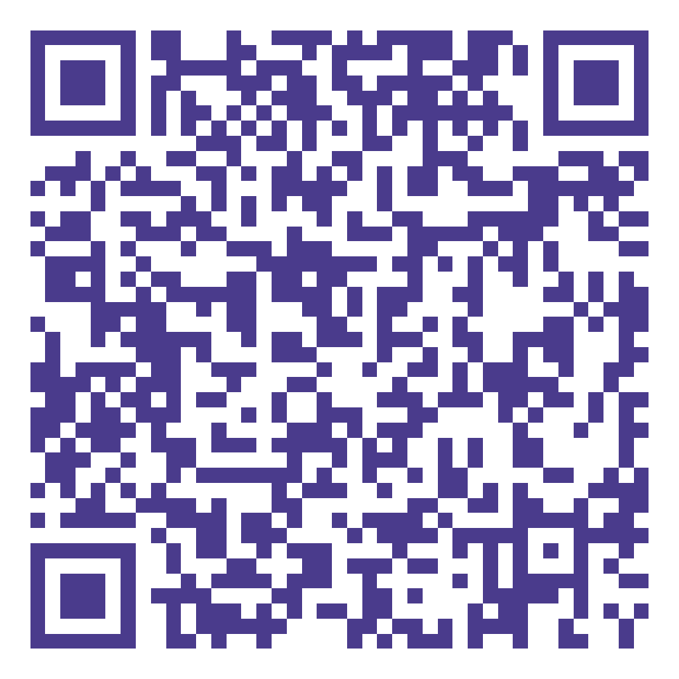
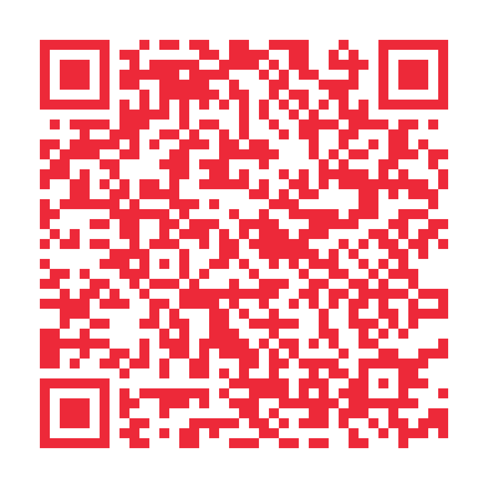

Lëtzebuergesch Clavier · kit ambassadeur
Espace ambassadeurs 🇱🇺
Une seule adresse à envoyer, et tout est là : ce qui se fait en trente secondes, les messages déjà écrits, les liens qui convainquent, les codes à scanner, le tract, l'affiche et le dépliant à imprimer, les visuels à publier. Rien à installer, rien à demander — servez-vous.
🎯 Le seul chiffre qui compte aujourd'hui
Google exige qu'une nouvelle application soit testée par au moins douze personnes pendant quatorze jours consécutifs avant d'autoriser sa publication à tout le monde. C'est l'étape en cours, et la plus utile : chaque personne qui rejoint le test — et qui y reste — rapproche le clavier de sa sortie publique. Il n'y a pas de compteur de téléchargements sur cette page parce qu'il n'y en a pas encore de public : l'application n'est pas publiée.
1. En trente secondes
Envoyer le clavier à trois personnes qui écrivent en luxembourgeois tous les jours. Le lien à envoyer n'est pas celui du téléchargement mais celui du simulateur : on y tape sur le vrai clavier, avec son vrai dictionnaire, sans rien installer — c'est ce qui fait dire « ah oui, quand même ».
💬 Le message, en luxembourgeois
💬 Le même, en français
2. En deux minutes : entrer dans le test
La mission qui compte double : elle fait avancer le palier des douze, et elle donne un vrai retour d'usage. Rejoindre le test fermé, c'est recevoir l'application comme n'importe quelle autre — installation en un geste, mises à jour automatiques, sans autoriser les « sources inconnues ».
🧪 Rejoindre le test fermé sur Google Play
Ouvrir la page d'inscription, appuyer sur Devenir testeur, puis suivre le lien vers Google Play qui apparaît ensuite. Le test est réservé à une liste de comptes : si la page répond que le programme n'est pas ouvert au vôtre, indiquez l'adresse Google concernée dans le formulaire de retours, elle y sera ajoutée.
💬 Le message pour recruter un testeur
3. En dix minutes : en parler là où ça compte
Un cours du soir, une école, une association, une rédaction. Ces messages sont volontairement factuels : ils avancent des chiffres vérifiables et disent aussi ce que le clavier ne sait pas faire — c'est ce qui les rend lisibles par un enseignant ou un journaliste.
🏫 À un cours de langue, une école, un institut
📰 À un média, une association, une newsletter
Aucune adresse de contact n'est fournie ici, volontairement. Écrire à la bonne personne — l'enseignant qu'on connaît, le formulaire de contact de la rédaction — vaut infiniment mieux qu'un envoi en masse, et un message reçu d'un inconnu se traite comme du démarchage. Présentez-vous comme utilisateur, pas comme porte-parole du projet.
4. Les liens qui convainquent
Selon l'objection qu'on vous oppose, ce n'est pas la même page qu'il faut ouvrir.
- Le simulateur — « Ça marche vraiment ? » Le clavier tourne dans le navigateur, avec le dictionnaire et les suggestions de l'application. Rien à installer.
- Le comparatif — « Gboard le fait déjà. » Le face-à-face avec Gboard et le clavier d'Apple, y compris ce que les autres font mieux.
- Les corpus en chiffres — « Les mots viennent d'où ? » Les deux jeux de données, leurs licences, et la qualité de prédiction mesurée sur un jeu externe.
- La confidentialité — « Un clavier voit tout ce que je tape. » Aucune permission réseau, désactivation automatique dans les champs de mot de passe.
- Le guide — « Je ne saurai pas l'installer. » L'installation et l'activation, étape par étape.
- Les nouveautés — « C'est encore vivant ? » Ce qui a changé à chaque version, en clair.
- Labs — « Et la dictée ? » Les versions expérimentales, à présenter comme des essais et rien de plus.
5. À scanner, à coller
Cinq codes, cinq destinations, une couleur chacun — pour qu'on ne les confonde pas sur une même table. Tous en 980 × 980 px avec la correction d'erreur maximale : ils restent lisibles imprimés, photographiés de travers ou repris dans une story.
{kind=link}

pour une diapositive, un stand, un compte-rendu
{kind=link}

l'inscription Google Play s'ouvre
{kind=link}
le téléchargement démarre au scan

version expérimentale, pour les curieux

celui des supports imprimés, en noir d'encre
Clic droit ou appui long sur un code pour l'enregistrer, ou clic simple pour le télécharger.
Les quatre codes mènent à des destinations différentes et portent chacun leur couleur, pour qu'on ne les confonde pas sur une même table. Celui des supports imprimés est en noir d'encre : il finit photocopié, où une couleur claire perd le contraste dont la lecture optique a besoin.
6. Imprimer et distribuer
Trois supports, chacun en deux versions : en couleur pour un tirage soigné, et éco encre sur fond blanc pour une imprimante de bureau — un aplat A4 coûte une cartouche à lui seul. Tous portent le QR code du site, où le clavier s'essaie dans le navigateur avant toute installation.
🪧 Tract A5
🎨 Affiche A4
📖 Dépliant trois volets
Les supports sont des pages web, pas des fichiers de maquette : le PDF se refait à tout moment, et une correction de chiffre se répercute partout sans rouvrir un logiciel de mise en page. Si vous en fabriquez un vous-même, la charte graphique donne les couleurs, la police et les règles qui vont avec.
7. Publier en ligne
Pour une story, une page d'association, ou vos propres supports.
📺 Visuels prêts à publier
Chaque visuel est exporté en PNG à sa taille de diffusion exacte. Ils sont pensés pour des campagnes payantes, mais servent tels quels pour une publication ordinaire — c'est même le seul usage prévu aujourd'hui.
🖌️ Charte graphique
Si vous fabriquez votre propre affichette, cette page dit quelles couleurs vont où — et pourquoi le rouge du drapeau ne porte jamais une ligne de texte.
8. Ce qu'on vous demande de ne pas faire
Un clavier qu'on installe pour écrire sa langue tous les jours se recommande sur ce qu'il fait, pas sur ce qu'on en promet. Quatre règles, et elles tiennent en une phrase chacune.
- Pas de faux avis, pas de notes gonflées. Une note de complaisance se repère, et elle discrédite le projet plus sûrement qu'une absence de note.
- Pas d'envoi en masse. Trois messages à des personnes qui écrivent vraiment en luxembourgeois valent mieux que trois cents dans des groupes au hasard.
- Dites ce qui manque. Pas de saisie glissée, pas de thème sombre, pas de dictionnaire allemand, et la dictée de Labs est un essai dont la précision n'est pas au niveau de la frappe. Annoncer ces manques évite la déception qui fait désinstaller.
- Ne vous présentez pas comme l'éditeur. Vous êtes utilisateur du clavier ; pour les questions techniques ou institutionnelles, renvoyez vers le dépôt.
🔁 Et le retour le plus utile de tous
Un mot qui manque, une suggestion qui tombe à côté, une touche mal placée : c'est de là que vient l'essentiel des corrections du dictionnaire. Signalez-le, et dites dans quelle phrase cela s'est produit.
Chiffres relevés le 29 août 2026 sur le dictionnaire livré avec l'application.
Android et Google Play sont des marques de Google LLC ; cette application n'est
ni éditée ni approuvée par Google. Les corpus LuxAlign (CC BY-NC 4.0) et LETZ
(CC BY 4.0) sont cités sur la page des corpus.
Mir wëlle bleiwe wat mir sinn.